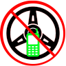
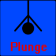
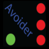
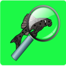

|
Archives
On this page, you can read about many of the smaller projects that I
worked on when I was younger.
Aurora for Discord (2016 - 2018)
Aurora for Discord was an easy to use Discord bot that
utilized an adaptation of the Aurora Interpreter for Discord.
With Aurora, users could ask for the current temperature, weather
forecasts, or get answers to other questions.
|
|
Virtual Passenger (2015)
Virtual Passenger was an Android app that I designed with the
intention of limiting users from texting and driving. Distracted
driving is a huge issue, and Virtual Passenger was designed to
help with it. When a user had virtual passenger installed, it
would monitor the phone's speed using its GPS and linear
acceleration sensors. As soon as the speed goes above the 30 MPH
threshold, the phone would display a system notification which
prompted the user to put down their phone if they were driving.
Unfortunately, I was unable to interest enough users in this
app, so I have since removed it from the Play Store.
|
 |
AVOX/MITCH (2013 - 2014)
Before I made Aurora, I developed an application called AVOX
(originally MITCH). AVOX, or the Augustin Voice-Over Control
System, was a voice-activated virtual assistant for the desktop.
Although it wasn't nearly as
sophisticated as Aurora, AVOX could
still perform a number of tasks, such as opening certain
programs, reading the time, closing programs, locking your
computer, and viewing websites.
|
|
Various 3D game projects (2012-2015)
Although I never published a full game, I became very
familiar with two different 3D game engines. When I first
decided to start programming, I planned on being a game
developer. After I got tired of developing mobile games, I started out by learning how to write my own
(extremely basic) game engine for desktops. However, when I realized that I
would be better off using an established engine, I began
learning about an engine called JMonkey. I went on to create a
very minimal game environment in JMonkey, which allowed me to
master the fundamental elements of the engine. After realizing
the negatives of using a Java-based engine for game development,
I went on to learn about Unreal Engine later on.
|
|
Plunge (2014)
In 2014, I wrote another Android game called Plunge. In
Plunge, the player had to tilt their device to avoid crashing
into various objects as they fell into a hole.
|
 |
Avoider (2013)
The first graphical game I developed was an Android game
called Avoider. Avoider was an 8-bit game in which the player
had to tap to bounce their green ball past the red obstacles.
|
 |
Plecostoman (2010-2012)
The first real program that I ever wrote was called
"Plecostoman and the Search for the Mystical Algae Wafer." I
wrote the first version of this game in Java, where it amassed
roughly 1300 lines of code. (Quite a bit for 10-year-old me.)
Plecostoman was a text-based adventure game in the style of old
DOS games like Zork, in which you play as a Plecostomus who has
to travel the Amazon River in search of the Mystical Algae
Wafer. Later on, I ported Plecostoman to Android. This was the
first Android app that I made entirely on my own without any
help from tutorials. In 2012, I also created a sequel to
Plecostoman called "Plecostoman 2: Attack on the cucumbers."
|
 |
Schweb (2007-2012)
Throughout my time in elementary and middle school, I ran
several websites under the name "Schweb." Initially, Schweb
started as my own personal review website. It was a place where
I could talk about whatever I was into. Schweb ran under the URL
schweb.homestead.com until 2010, which is when I decided to
change things around and expand into a new area of development.
Around this time, I was just beginning to learn how to make
games, so I decided that it would be a good idea to showcase
them on my website. From this moment on, Schweb had been split
into two separate sites - Schweb Reviews and Schweb Games. In
2011, I added a social network to the mix. Schweb Social was my
first attempt at creating a social network. Unfortunately, its
capabilities were very limited, and it only gained 2 other users
in its lifespan, both of which were my best friends. In 2012, I
decided to shut down all of Schweb's websites permanently in
order to focus more on my other projects.
|
|
Various viruses and joke programs
I also like to make little "viruses" in my spare time to
prank my friends with. None of them do any actual damage to
computers, but a few of them can hide themselves pretty well.
I've only ever tested them on my computer and my friends'
computers (with their permission, of course). I don't have these
programs publicly accessible for obvious reasons, but here are a
few brief descriptions of some of my favorites.
- The Star Trek Shutdown virus, a program that would
install itself into the user's startup directory and begin
playing the Star Trek red alert siren along with a countdown
timer. After five minutes, the computer would shut down and
the process would begin on restart. Don't worry, I also
wrote a batch file that reverses the effect.
- warmitup.exe, a gag program based on
this
video that displays a moving gif of a tongue and plays
sound clips from the video.
- Barrel roll, a script that constantly rotates your
screen
- A program that constantly opens and closes your disk
drive
- A program that force-closes all of your programs and
kills explorer.exe repeatedly (Also blue-screens devices
running an OS older than Windows 7)
|
|
Various incomplete projects
In addition to the projects listed above and on my projects
page, I also began working on many other projects that I was
never able to finish for various reasons. Some of these projects
were:
- InfoLens, an Android app that would allow users to get
information on objects using their camera (2016)
- Aborted due to server limitations & better apps that
existed to serve the same purpose
- AVOX Iris, a retinal scanner add-on for AVOX that would
function as a door lock (2015)
- Aborted due to lack of funds and receiving faulty
hardware
- PlecOS, a Linux distro that I was going to make for fun
(2016)
- Aborted because I didn't have any practical need for
a new OS, and my computer at the time was incapable of
supporting the development of an OS.
- Humanization mod for Minecraft, a mod that would add
various extra living necessities to the game, such as using
the bathroom, clothing, temperature requirements, thirst,
etc. (2015)
- Aborted because I needed to focus more on the
development of Aurora for Home Automation
- An unnamed social network project that would operate
entirely through proxies to circumvent network restrictions
- Aborted due to a general lack of interest, and
because of the high availability of proxy services.
|
|
|